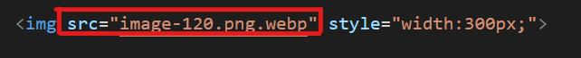

Sintaxe de uma TAG

O que é um atributo
Atributos HTML são palavras especiais que fornecem informações adicionais sobre os elementos e definem características ou propriedades adicionais destes elementos como altura e largura de uma imagem.
Estrutura básica de um site
- O <.!DOCTYPE> informa ao navegador da web em qual versão do HTML a página está sendo escrita, por exemplo quando incluímos dentro do DOCTYPE a palavra HTML (<.!DOCTYPE html>), o navegador entenderá que aquela versão é do HTML5.
- O elemento <.html> <. /html> está logo abaixo da declaração DOCTYPE, é o elemento básico e principal de um documento HTML e atua como um container onde podemos definir o idioma padrão utilizado pelo documento através do atributo “lang” que por padrão vem em inglês (<.html lang=“en”>). Todo documento HTML inicializa e finaliza com essa tag.
- O <.head> <. /head> é o cabeçalho do documento cujo conteúdo não é exibido no navegador durante o carregamento da página. Esse elemento contém metadados, informações importantes, que especifica dados sobre o documento HTML.
- <.body> <. /body> Define o corpo do documento, e tudo que estiver dentro desta tag será mostrado no navegador web.
- <.!– –> Essa tag cria um comentário em qualquer parte do código-fonte. Útil para orientar pessoas em modificações futuras. Ou para relembrar sobre como cada linha funciona.